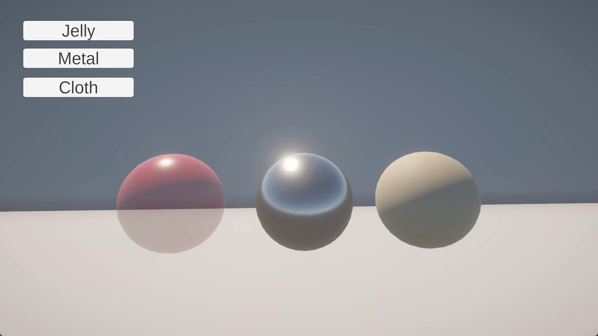

Jelly · Metal · Cloth
물리 재질 실험
같은 구체에 젤리, 금속, 천 재질을 바꿔 입히며 재질마다 빛을 받는 모습이 어떻게 달라지는지 비교한 Unity 실험입니다.

Unity에서 세 개의 구체에 Jelly, Metal, Cloth 버튼으로 재질을 바꿔 적용해 보는 실험입니다. 반투명한 젤리, 주변을 비추는 금속, 빛을 부드럽게 흩뜨리는 천이 같은 조명 아래에서 어떻게 다르게 보이는지 한 화면에서 비교할 수 있게 만들었습니다.